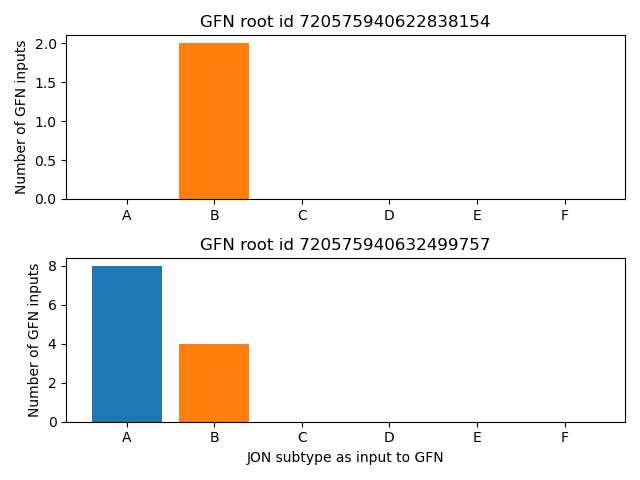

Exercises 4 - Pandas and connectomics#
import pandas as pd
import numpy as np
import matplotlib.pyplot as plt
Exercise 4.1: Make a pandas DataFrame#
You are given three lists representing data in a contact book (names, birthdays, phone numbers).
Turn the contact the book into a DataFrame with the names as index and two columns - birthday and phone number.
Access the data in the DataFrame to print the phone number and birthday of Alan.
Access the data in the DataFrame to print all phone numbers.
Access the data in the DataFrame to print the Yolanda’s birthday.
Save the phone book as a csv file
names = ['Alice', 'Yolanda', 'Tom', 'Francoise', 'Alan']
phone_numbers = [432246234, 911, 984703, 123156, 190998010]
birthdays = ['1.3.2001', '4.8.2004', '17.9.1998', '24.12.2012', '8.11.1935']
# your solution here
birthday 8.11.1935
phone 190998010
Name: Alan, dtype: object
Alice 432246234
Yolanda 911
Tom 984703
Francoise 123156
Alan 190998010
Name: phone, dtype: int64
911
Exercise 4.2: Make a DataFrame 2#
You are given a dictionary with element names and their atomic numbers.
Make a DataFrame with the element names as index and the atomic numbers as a column.
Access the data in the DataFrame to print the atomic number of gold.
Save the DataFrame to an excel file.
atomic_numbers = {'zinc': 30, 'gold': 79, 'vibranium': 1000, 'radium': 88}
print(atomic_numbers)
# your solution here
{'zinc': 30, 'gold': 79, 'vibranium': 1000, 'radium': 88}
zinc 30
gold 79
vibranium 1000
radium 88
Name: atomic number, dtype: int64
atomic number 79
Name: gold, dtype: int64
Exercise 4.3: Connectome analyses using pandas#
Johnston’s Organ Neurons (JONs) are antennal mechanosensory neurons that occur in 6 subtypes (A-F) with different preferences for antennal movements. The JON A and B subtypes respond to fast antennal vibrations induced by sound, and hence act as the fly’s auditory receptor neurons. Other JON subtypes respond to other features of antennal movement, for instance, JON C and E encode antennal position.
In this exercise, we will use the connectome to:
Determine the number of neurons in each JON subpopulation (JO-A … JO-F).
Determine whether a neuron that triggers startle and escape responses to odors, visual and acoustic stimuli is directly connecting to JONs.
Exercise 4.3a: Loading and inspecting the data#
But first, let’s load the data. They are saved in two csv files:
‘dat/flywire/classification.csv.gz’: Contains information on all cells (including cell types)
‘dat/flywire/connections.csv.gz’: Synaptic connections and transmitter types
Load them and familiarize yourself with the different columnes:
# your solution here
| root_id | flow | super_class | class | sub_class | cell_type | hemibrain_type | hemilineage | side | nerve | |
|---|---|---|---|---|---|---|---|---|---|---|
| 0 | 720575940627005443 | intrinsic | optic | L1-5 | NaN | L4 | NaN | NaN | right | NaN |
| 1 | 720575940615995398 | intrinsic | optic | L1-5 | NaN | L4 | NaN | NaN | right | NaN |
| 2 | 720575940621762567 | afferent | ascending | AN | NaN | NaN | NaN | NaN | right | CV |
| 3 | 720575940624384007 | afferent | sensory | olfactory | NaN | NaN | ORN_VA1v | NaN | left | AN |
| 4 | 720575940614422540 | intrinsic | central | NaN | NaN | NaN | AOTU032,AOTU034 | LALa1_posterior | right | NaN |
| ... | ... | ... | ... | ... | ... | ... | ... | ... | ... | ... |
| 127974 | 720575940621500404 | intrinsic | visual_projection | NaN | NaN | NaN | LLPC1,LLPC2a,LLPC2b,LLPC2c,LLPC2d,LLPC3 | NaN | right | NaN |
| 127975 | 720575940651646966 | intrinsic | central | NaN | NaN | NaN | NaN | LB0_anterior | center | NaN |
| 127976 | 720575940630151162 | intrinsic | optic | optic_lobes | NaN | NaN | NaN | NaN | left | NaN |
| 127977 | 720575940629364731 | intrinsic | optic | optic_lobes | NaN | NaN | NaN | NaN | right | NaN |
| 127978 | 720575940623859711 | afferent | sensory | visual | NaN | R1-6 | NaN | NaN | right | NaN |
127979 rows × 10 columns
| pre_root_id | post_root_id | neuropil | syn_count | nt_type | |
|---|---|---|---|---|---|
| 0 | 720575940596125868 | 720575940608552405 | LOP_R | 5 | ACH |
| 1 | 720575940596125868 | 720575940611348834 | LOP_R | 7 | ACH |
| 2 | 720575940596125868 | 720575940613059993 | LOP_R | 5 | GLUT |
| 3 | 720575940596125868 | 720575940616986553 | LOP_R | 5 | ACH |
| 4 | 720575940596125868 | 720575940620124326 | LOP_R | 8 | ACH |
| ... | ... | ... | ... | ... | ... |
| 3794610 | 720575940660868737 | 720575940607206786 | ME_L | 9 | GABA |
| 3794611 | 720575940660868737 | 720575940608664873 | ME_L | 6 | GABA |
| 3794612 | 720575940660868737 | 720575940611462242 | ME_L | 6 | GABA |
| 3794613 | 720575940660868737 | 720575940622913063 | ME_L | 23 | GABA |
| 3794614 | 720575940660868737 | 720575940626553546 | ME_L | 6 | ACH |
3794615 rows × 5 columns
Exercise 4.3b: How many JONs exist per subtype?#
For each of the 6 JON subtypes (A, B, C, D, E, F) find the number of neurons instances in the connectome and plot the number of neurons for each subtype as a bar plot (one bar per subtype, bar height indicates number of neurons for that subtype).
Roughly like so:
# your solution here
Exercise 4.3c: Are JONs connected to the giant-fibre neuron? If so how many neurons per subtype?#
The giant-fibre neuron (GFN) is a large neuron that triggers startle and escape responses to different modalities - odors, visual stimuli but also sudden loud sounds. The giant fibre has an axon with a large diameter and is directly connected to motor neurons in the ventral nerve chord to rapidly trigger escape.
Is it also directly connected to sensory neurons, in particular JONs?
Find the GFN in the connectome - there should be two, one on each side.
For each of the GFNs, identify it’s inputs, and determine how many of each JON subtypes provide direct input to it. Plot this as a bar plot.
Hint The cell type of the GFN is “DNp01” (DN=Descending Neuron)
FInd the GFNs in the connectome:
# your solution here
| root_id | flow | super_class | class | sub_class | cell_type | hemibrain_type | hemilineage | side | nerve | |
|---|---|---|---|---|---|---|---|---|---|---|
| 13301 | 720575940622838154 | efferent | descending | DN | NaN | DNp01 | Giant Fiber | putative_primary | left | CV |
| 122666 | 720575940632499757 | efferent | descending | DN | NaN | DNp01 | Giant Fiber | putative_primary | right | CV |
For each of the GFNs, identify it’s inputs, and determine how many of each JON subtypes provide direct input to it. For each of the GFNs, plot the number of JONs of each subtype in the inputs as a bar plot.
Roughly like so:

# your solution here
Exercise 4.3d: Bonus: Plot the synapse count for each of the JON inputs to the GFN#
# your solution here
Exercise 4.4: Groupby (Bonus)#
In the lecture, we used groupby and aggregate to compute the mean response for each animal.
Extend the code from the lecture by computing not only the mean but also the standard deviation for each animal, and plotting them using error bars.
df = pd.read_csv('dat/pd_groupby.csv')
display(df.head())
# your solution here
| animal | pre | post | |
|---|---|---|---|
| 0 | 0.0 | 2.211986 | 3.107796 |
| 1 | 0.0 | 2.204871 | 2.830730 |
| 2 | 0.0 | 2.560633 | 3.483980 |
| 3 | 0.0 | 1.476412 | 2.801709 |
| 4 | 0.0 | 3.662519 | 3.447005 |